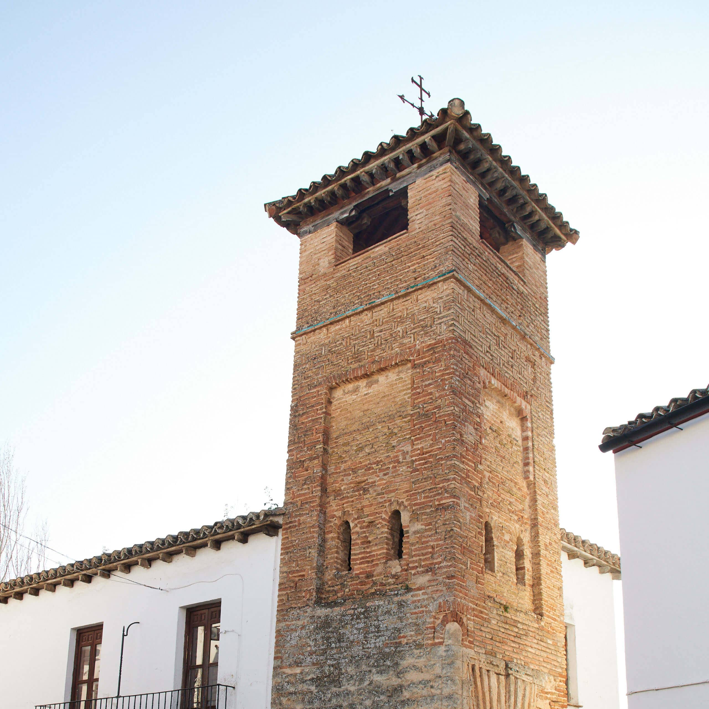
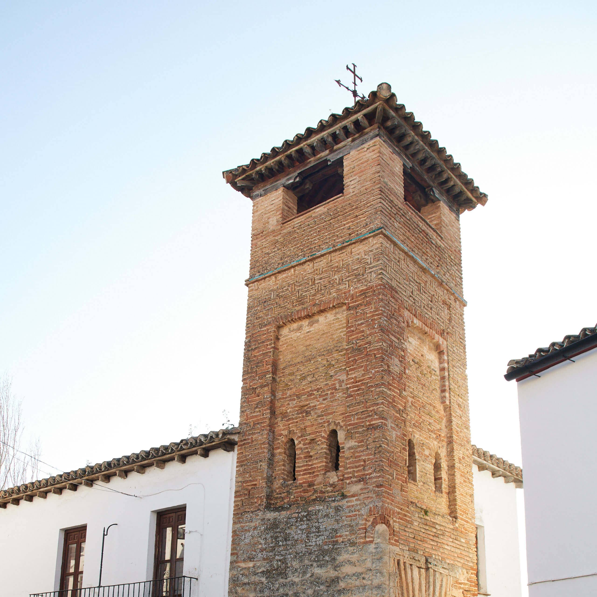
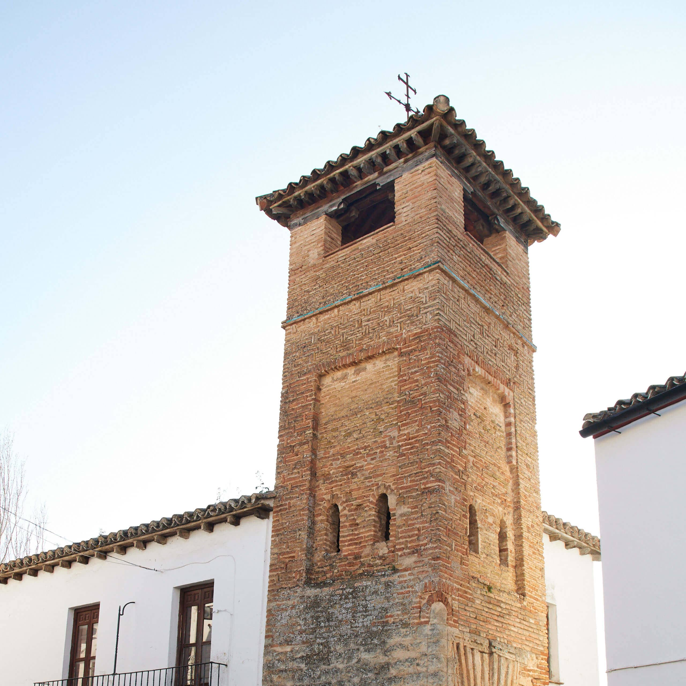
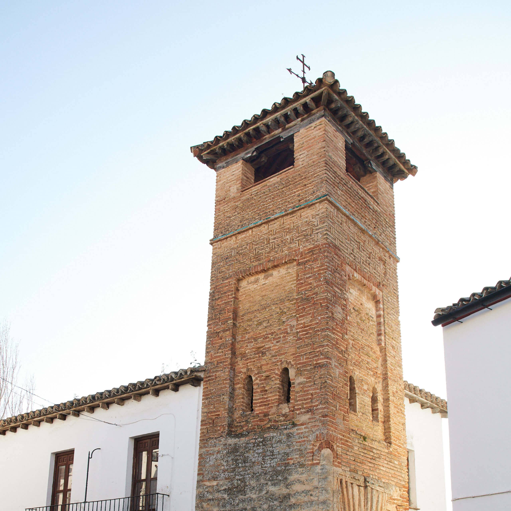

The Minaret of Sab Sebastian was originally part of a Moorish mosque that was converted into a church after the Christian reconquest. After the church itself was demolished, only the minaret remains now. The top section with the bell tower is of Christian origin but the lower sections are all original.
Download the map of all Ronda tourist attractions here